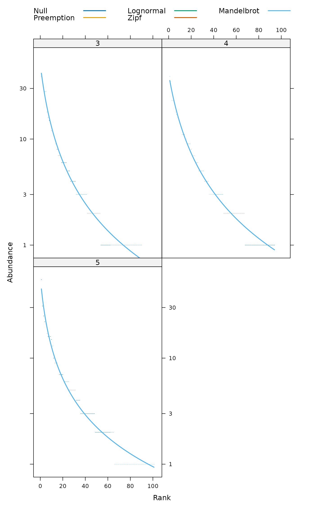
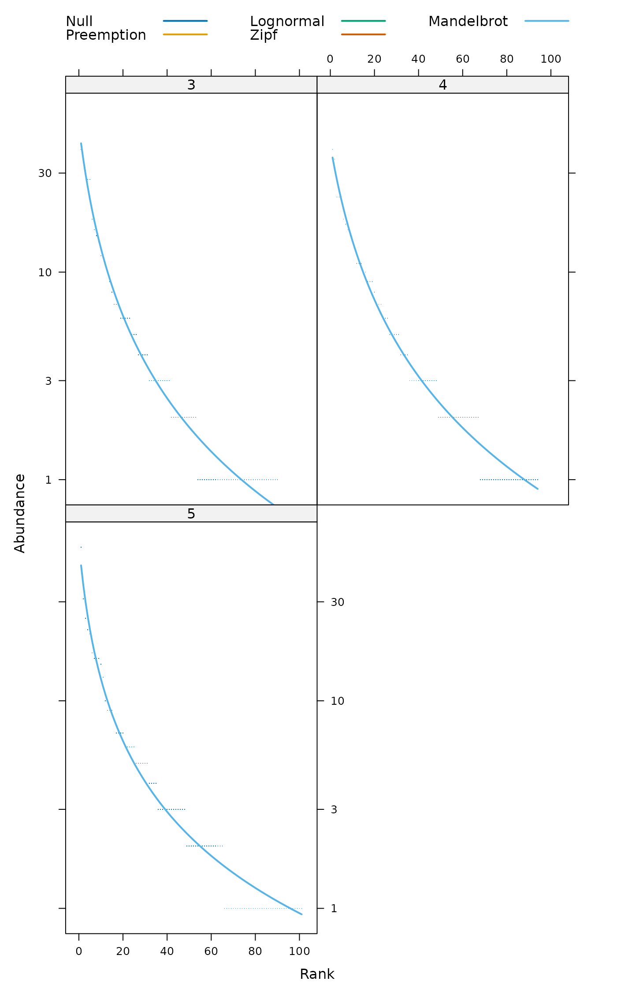

Rank -- Abundance or Dominance / Diversity Models
radfit.RdFunctions construct rank -- abundance or dominance / diversity or Whittaker plots and fit brokenstick, preemption, log-Normal, Zipf and Zipf-Mandelbrot models of species abundance.
Usage
# S3 method for default
radfit(x, ...)
rad.null(x, family=poisson, ...)
rad.preempt(x, family = poisson, ...)
rad.lognormal(x, family = poisson, ...)
rad.zipf(x, family = poisson, ...)
rad.zipfbrot(x, family = poisson, ...)
# S3 method for radline
predict(object, newdata, total, ...)
# S3 method for radfit
plot(x, BIC = FALSE, legend = TRUE, ...)
# S3 method for radfit.frame
plot(x, order.by, BIC = FALSE, model, legend = TRUE,
as.table = TRUE, ...)
# S3 method for radline
plot(x, xlab = "Rank", ylab = "Abundance", type = "b", ...)
radlattice(x, BIC = FALSE, ...)
# S3 method for radfit
lines(x, ...)
# S3 method for radfit
points(x, ...)
as.rad(x)
# S3 method for rad
plot(x, xlab = "Rank", ylab = "Abundance", log = "y", ...)Arguments
- x
Data frame, matrix or a vector giving species abundances, or an object to be plotted.
- family
Error distribution (passed to
glm). All alternatives acceptinglink = "log"infamilycan be used, although not all make sense.- object
A fitted result object.
- newdata
Ranks used for ordinations. All models can interpolate to non-integer “ranks” (although this may be approximate), but extrapolation may fail
- total
The new total used for predicting abundance. Observed total count is used if this is omitted.
- order.by
A vector used for ordering sites in plots.
- BIC
Use Bayesian Information Criterion, BIC, instead of Akaike's AIC. The penalty in BIC is \(k = \log(S)\) where \(S\) is the number of species, whereas AIC uses \(k = 2\).
- model
Show only the specified model. If missing, AIC is used to select the model. The model names (which can be abbreviated) are
Null,Preemption,Lognormal,Zipf,Mandelbrot.- legend
Add legend of line colours.
- as.table
Arrange panels starting from upper left corner (passed to
xyplot).- xlab,ylab
Labels for
xandyaxes.- type
Type of the plot,
"b"for plotting both observed points and fitted lines,"p"for only points,"l"for only fitted lines, and"n"for only setting the frame.- log
Use logarithmic scale for given axis. The default
log = "y"gives the traditional plot of community ecology where the preemption model is a straight line, and withlog = "xy"Zipf model is a straight line. Withlog = ""both axes are in the original arithmetic scale.- ...
Other parameters to functions.
Details
Rank--Abundance Dominance (RAD) or Dominance/Diversity plots (Whittaker 1965) display logarithmic species abundances against species rank order. These plots are supposed to be effective in analysing types of abundance distributions in communities. These functions fit some of the most popular models mainly following Wilson (1991).
Functions rad.null, rad.preempt, rad.lognormal,
rad.zipf and zipfbrot fit the individual models
(described below) for a single vector (row of data frame), and
function radfit fits all models. The argument of the function
radfit can be either a vector for a single community or a data
frame where each row represents a distinct community.
Function rad.null fits a brokenstick model where the expected
abundance of species at rank \(r\) is \(a_r = (J/S)
\sum_{x=r}^S (1/x)\) (Pielou
1975), where \(J\) is the total number of individuals (site total)
and \(S\) is the total number of species in the community. This
gives a Null model where the individuals are randomly distributed
among observed species, and there are no fitted parameters.
Function rad.preempt fits the niche preemption model,
a.k.a. geometric series or Motomura model, where the expected
abundance \(a\) of species at rank \(r\) is \(a_r = J \alpha
(1 - \alpha)^{r-1}\). The only
estimated parameter is the preemption coefficient \(\alpha\) which
gives the decay rate of abundance per rank. The niche preemption
model is a straight line in a RAD plot. Function
rad.lognormal fits a log-Normal model which assumes that the
logarithmic abundances are distributed Normally, or \(a_r = \exp(
\log \mu + \log \sigma N)\),
where \(N\) is a Normal deviate. Function rad.zipf fits
the Zipf model \(a_r = J p_1 r^\gamma\) where
\(p_1\) is the fitted proportion of the most abundant species,
and \(\gamma\) is a decay coefficient. The Zipf--Mandelbrot model
(rad.zipfbrot) adds one parameter: \(a_r = J c (r +
\beta)^\gamma\) after which \(p_1\)
of the Zipf model changes into a meaningless scaling constant
\(c\).
Log-Normal and Zipf models are generalized linear models
(glm) with logarithmic link function. Zipf--Mandelbrot
adds one nonlinear parameter to the Zipf model, and is fitted using
nlm for the nonlinear parameter and estimating other
parameters and log-Likelihood with glm. Preemption
model is fitted as a purely nonlinear model. There are no estimated
parameters in the Null model.
The default family is poisson which is
appropriate only for genuine counts (integers), but other families
that accept link = "log" can be used. Families
Gamma or gaussian may be appropriate for
abundance data, such as cover. The best model is selected by
AIC. Therefore ‘quasi’ families such as
quasipoisson cannot be used: they do not have
AIC nor log-Likelihood needed in non-linear models.
All these functions have their own plot functions. When
radfit was applied for a data frame, plot uses
Lattice graphics, and other plot
functions use ordinary graphics. The ordinary graphics functions
return invisibly an ordiplot object for observed points,
and function identify.ordiplot can be used to label
selected species. Alternatively, radlattice uses
Lattice graphics to display each radfit
model of a single site in a separate panel together with their AIC or
BIC values.
Function as.rad is a base function to construct ordered RAD
data. Its plot is used by other RAD plot functions
which pass extra arguments (such as xlab and log) to
this function. The function returns an ordered vector of taxa
occurring in a site, and a corresponding attribute "index" of
included taxa.
Value
Functions rad.null, rad.preempt, rad.lognormal,
zipf and zipfbrot fit each a single RAD model to a
single site. The result object has class "radline" and
inherits from glm, and can be handled by some (but not
all) glm methods.
Function radfit fits all models either to a single site or to
all rows of a data frame or a matrix. When fitted to a single site,
the function returns an object of class "radfit" with items
y (observed values), family, and models
which is a list of fitted "radline" models. When applied for a
data frame or matrix, radfit function returns an object of
class "radfit.frame" which is a list of "radfit"
objects, each item names by the corresponding row name.
All result objects ("radline", "radfit",
"radfit.frame") can be accessed with same method functions.
The following methods are available: AIC,
coef, deviance, logLik. In
addition the fit results can be accessed with fitted,
predict and residuals (inheriting from
residuals.glm). The graphical functions were discussed
above in Details.
References
Pielou, E.C. (1975) Ecological Diversity. Wiley & Sons.
Preston, F.W. (1948) The commonness and rarity of species. Ecology 29, 254--283.
Whittaker, R. H. (1965) Dominance and diversity in plant communities. Science 147, 250--260.
Wilson, J. B. (1991) Methods for fitting dominance/diversity curves. Journal of Vegetation Science 2, 35--46.
Note
The RAD models are usually fitted for proportions instead of original
abundances. However, nothing in these models seems to require division
of abundances by site totals, and original observations are used in
these functions. If you wish to use proportions, you must standardize
your data by site totals, e.g. with decostand and use
appropriate family such as Gamma.
The lognormal model is fitted in a standard way, but I do think this is not quite correct -- at least it is not equivalent to fitting Normal density to log abundances like originally suggested (Preston 1948).
Some models may fail. In particular, estimation of the Zipf-Mandelbrot
model is difficult. If the fitting fails, NA is returned.
Wilson (1991) defined preemption model as \(a_r = J p_1 (1 - \alpha)^{r-1}\), where \(p_1\) is the fitted proportion of the first species. However, parameter \(p_1\) is completely defined by \(\alpha\) since the fitted proportions must add to one, and therefore I handle preemption as a one-parameter model.
Veiled log-Normal model was included in earlier releases of this
function, but it was removed because it was flawed: an implicit veil
line also appears in the ordinary log-Normal. The latest release version
with rad.veil was 1.6-10.
Examples
data(BCI)
mod <- rad.lognormal(BCI[5,])
mod
#>
#> RAD model: Log-Normal
#> Family: poisson
#> No. of species: 101
#> Total abundance: 505
#>
#> log.mu log.sigma Deviance AIC BIC
#> 0.951926 1.165929 17.077549 317.656487 322.886728
plot(mod)
 mod <- radfit(BCI[1,])
## Standard plot overlaid for all models
## Preemption model is a line
plot(mod)
mod <- radfit(BCI[1,])
## Standard plot overlaid for all models
## Preemption model is a line
plot(mod)
 ## log for both axes: Zipf model is a line
plot(mod, log = "xy")
## log for both axes: Zipf model is a line
plot(mod, log = "xy")
 ## Lattice graphics separately for each model
radlattice(mod)
## Lattice graphics separately for each model
radlattice(mod)
 # Take a subset of BCI to save time and nerves
mod <- radfit(BCI[3:5,])
mod
#>
#> Deviance for RAD models:
#>
#> 3 4 5
#> Null 86.1127 49.8111 80.855
#> Preemption 58.9295 39.7817 76.311
#> Lognormal 29.2719 16.6588 17.078
#> Zipf 50.1262 47.9108 30.936
#> Mandelbrot 5.7342 5.5665 10.573
plot(mod, pch=".")

# Take a subset of BCI to save time and nerves
mod <- radfit(BCI[3:5,])
mod
#>
#> Deviance for RAD models:
#>
#> 3 4 5
#> Null 86.1127 49.8111 80.855
#> Preemption 58.9295 39.7817 76.311
#> Lognormal 29.2719 16.6588 17.078
#> Zipf 50.1262 47.9108 30.936
#> Mandelbrot 5.7342 5.5665 10.573
plot(mod, pch=".")
